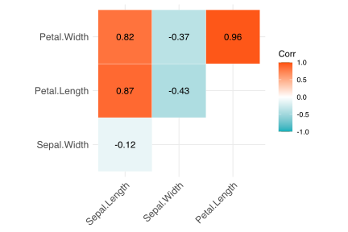
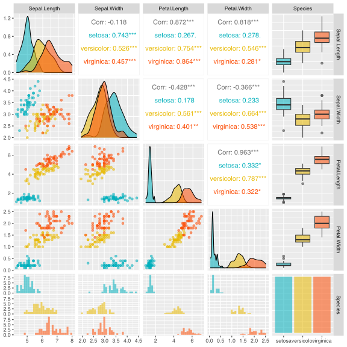
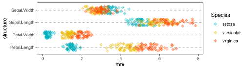
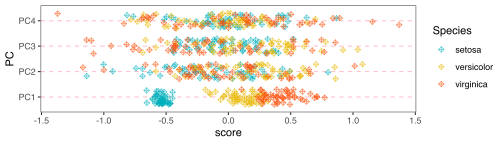
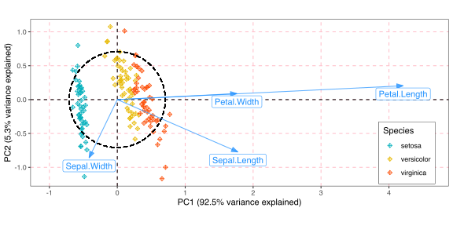

8b. PCA Additional Examples
Analysing the Iris data with a PCA
![]()
1 Set-up the analysis environment
2 The Iris data
The Iris dataset is a well-known collection of data that represent the morphological characteristics of three species of Iris, viz. I. setosa, I. versicolor, and I. virginica. The morphological characteristics measured include sepal length and width and petal length and width.
The question we can address using a PCA is, “which of these variables (sepal length and width, petal length and width) is most responsible for causing visual morphological differences between the three species?”
Sepal.Length Sepal.Width Petal.Length Petal.Width Species
1 5.1 3.5 1.4 0.2 setosa
2 4.9 3.0 1.4 0.2 setosa
3 4.7 3.2 1.3 0.2 setosa
4 4.6 3.1 1.5 0.2 setosa
5 5.0 3.6 1.4 0.2 setosa
6 5.4 3.9 1.7 0.4 setosa2.1 Visualise the raw data
The first thing to do after having loaded the data is to see how the variables are correlated with one-another, and we can do so with a simple pairwise correlation. I’ll demonstrate five ways of doing so.
2.1.1 Method 1:
corr <- cor(iris[, 1:4])
ggcorrplot(corr, type = 'upper', outline.col = "white",
colors = c("#00AFBB", "white", "#FC4E07"),
lab = TRUE)
2.1.2 Method 2:
2.1.3 Method 3:
library(GGally)
ggpairs(iris, aes(colour = Species, alpha = 0.4)) +
scale_color_discrete(type = cols) +
scale_fill_discrete(type = cols)
2.1.4 Method 4:
library(scatterPlotMatrix)
scatterPlotMatrix(iris, zAxisDim = "Species")2.1.5 Method 5:
iris |>
pivot_longer(cols = Sepal.Length:Petal.Width,
values_to = "mm",
names_to = "structure") |>
ggplot(aes(x = structure, y = mm)) +
geom_jitter(aes(colour = Species), shape = 9, width = 0.3, alpha = 0.6) +
scale_color_discrete(type = cols) +
coord_flip() +
theme_bw() +
theme(
panel.grid.major.x = element_blank(),
panel.grid.minor.x = element_blank(),
panel.grid.major.y = element_line(colour = "grey60", linetype = "dashed")
)
By examining all the plots, above (but particularly the simplest one in Method 5), what can we conclude about which morphological variable is most responsible for the visual differences among species? The petal dimensions seem to be the most telling by virtue of their being less overlap of point representing the three species, particularly that of its length. The dimensions of the sepals seem to be less important as offering a way to distinguish the species.
A PCA should be able to reduce the complexity of measurements and tell us which of the four variables is most able to tell the species apart. It should reduce the four dimensions (sepal width and length, and petal width and length) into the most influential one or two rotated and scaled orthogonal dimensions (axes).
2.2 Do the PCA
iris_pca <- rda(iris[, 1:4], scale = FALSE)
iris_pcaCall: rda(X = iris[, 1:4], scale = FALSE)
Inertia Rank
Total 4.573
Unconstrained 4.573 4
Inertia is variance
Eigenvalues for unconstrained axes:
PC1 PC2 PC3 PC4
4.228 0.243 0.078 0.024 summary(iris_pca, display = "sp") # omit display of site scores
Call:
rda(X = iris[, 1:4], scale = FALSE)
Partitioning of variance:
Inertia Proportion
Total 4.573 1
Unconstrained 4.573 1
Eigenvalues, and their contribution to the variance
Importance of components:
PC1 PC2 PC3 PC4
Eigenvalue 4.2282 0.24267 0.07821 0.023835
Proportion Explained 0.9246 0.05307 0.01710 0.005212
Cumulative Proportion 0.9246 0.97769 0.99479 1.000000
Scaling 2 for species and site scores
* Species are scaled proportional to eigenvalues
* Sites are unscaled: weighted dispersion equal on all dimensions
* General scaling constant of scores:
Species scores
PC1 PC2 PC3 PC4
Sepal.Length 1.7754 -0.77277 0.38889 0.1164
Sepal.Width -0.4152 -0.85936 -0.39950 -0.1179
Petal.Length 4.2086 0.20405 -0.05094 -0.1770
Petal.Width 1.7602 0.08884 -0.36470 0.2780
attr(,"const")
[1] 5.1092.3 Plot the PC scores as a normal panel of points
PC1_scores <- as.data.frame(scores(iris_pca, choices = c(1, 2, 3, 4), display = "sites"))
PC1_scores$Species <- iris$Species
PC1_scores |>
pivot_longer(cols = PC1:PC4,
values_to = "score",
names_to = "PC") |>
ggplot(aes(x = PC, y = score)) +
geom_jitter(aes(colour = Species), shape = 9, width = 0.3, alpha = 0.6) +
scale_color_discrete(type = cols) +
coord_flip() +
theme_bw() +
theme(
panel.grid.major.x = element_blank(),
panel.grid.minor.x = element_blank(),
panel.grid.major.y = element_line(colour = "pink", linetype = "dashed")
)
2.4 Make biplots
2.4.1 A default biplot
2.4.2 A ggplot() biplot
Assemble a biplot from scratch in ggplot2. This requires that we extract from the iris_pca object all the necessary components and layer them one-by-one using ggplot():
library(ggforce) # for geom_circle
# species scores (actually morph properties here) for biplot arrows:
iris_spp_scores <- data.frame(scores(iris_pca, display = "species"))
# add center point for arrows to start at:
iris_spp_scores$xy_start <- rep(0, 4)
# add the rownames as a column for plotting at the arrow heads:
iris_spp_scores$morph <- rownames(iris_spp_scores)
rownames(iris_spp_scores) <- NULL
# var explained along PC1 used for labeling the x-axis:
PC1_var <- round(iris_pca$CA$eig[1] / sum(iris_pca$CA$eig) * 100, 1)
# var explained along PC2 used for labeling the y-axis:
PC2_var <- round(iris_pca$CA$eig[2] / sum(iris_pca$CA$eig) * 100, 1)
# calculate the radius of the circle of equilibrium contribution
# (Num Ecol with R, p. 125):
r <- sqrt(2/4)
# species scores (actually indiv measurements here) for biplot points:
iris_site_scores <- data.frame(scores(iris_pca, display = "sites"))
iris_site_scores$Species <- iris$Species
ggplot(iris_site_scores, aes(x = PC1, y = PC2)) +
geom_hline(aes(yintercept = 0), linetype = "dashed") +
geom_vline(aes(xintercept = 0), linetype = "dashed") +
geom_point(aes(colour = Species), shape = 9) +
geom_circle(aes(x0 = 0, y0 = 0, r = r), # not yet correctly scaled!!
linetype = 'dashed',
lwd = 0.6, inherit.aes = FALSE) +
geom_segment(data = iris_spp_scores, aes(x = xy_start, y = xy_start,
xend = PC1, yend = PC2),
lineend = "butt",
arrow = arrow(length = unit(3, "mm"),
type = "closed",
angle = 20),
alpha = 0.7, colour = "dodgerblue") +
geom_label(data = iris_spp_scores, aes(x = PC1, y = PC2, label = morph),
nudge_y = -0.12,
colour = "dodgerblue") +
scale_color_discrete(type = cols) +
coord_equal() +
scale_x_continuous(limits = c(-1, 4.6)) +
labs(x = paste0("PC1 (", PC1_var, "% variance explained)"),
y = paste0("PC2 (", PC2_var, "% variance explained)")) +
theme_bw() +
theme(
panel.grid.major.x = element_line(colour = "pink", linetype = "dashed"),
panel.grid.minor.x = element_blank(),
panel.grid.major.y = element_line(colour = "pink", linetype = "dashed"),
panel.grid.minor.y = element_blank(),
legend.position = c(0.9, 0.2),
legend.box.background = element_rect(colour = "black")
)
What do we see in the biplot? We see that most of the variation in morphology between the three Iris species is explained by PC1 (obviously), which accounts for 92.5% of the total inertia. Very little is added along PC2 (only an additional 5.3% variance explained), so we may safely ignore it. Looking at the ‘Species scores’ associated with PC1 (see summary(iris_pca)), we see that the heaviest loading is with petal length, which causes the long arrow in the positive PC1 direction; it has virtually no loading along PC2, and this is confirmed by the fact that the arrow is positioned almost parallel along PC1 and does not deviate up or down in the PC2 direction. We can also see that the biplot arrow for petal width sits completely on top of the petal length arrow. This means that petal length and width are almost perfectly correlated (we can also see this in the pairwise correlations where the r-value is 0.96).
3 References
Reuse
Citation
@online{smit2021,
author = {Smit, AJ},
title = {8b. {PCA} {Additional} {Examples}},
date = {2021-01-01},
url = {https://tangledbank.netlify.app/BCB743/08-PCA_examples.html},
langid = {en}
}